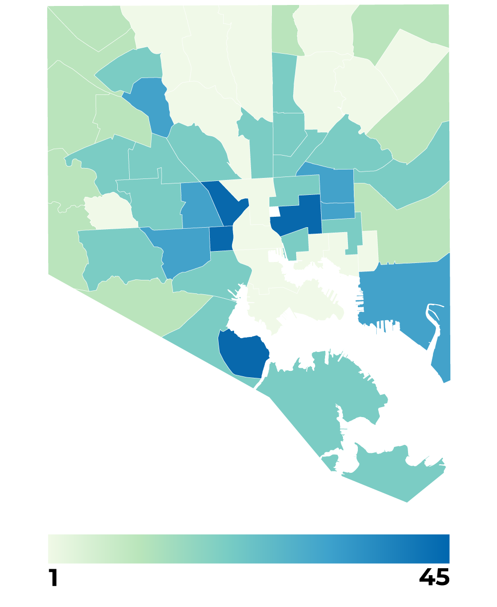

High temps correlate with high poverty, lower life expectancy and more.
Temperatures across Baltimore can vary up to 10 degrees on a hot summer afternoon, according to a federally-funded study from 2018. This "urban heat island effect" is illustrated by neighborhood in the large map below. A CNS analysis of neighborhood demographics found a correlation between the temperature of a neighborhood and certain quality-of-life factors. Neighborhoods with a higher ambient temperature tend to have more families living below the poverty live, lower life expectancy, higher violent crime rates and a higher rate of employment then lower-temperature neighborhoods, as seen in the smaller maps below.
Temperature

Poverty
Percent of families living below the poverty line.
Life expectancy
Average life expectancy of neighborhood residents.

Crime
Rates of violent crime per 1,000 residents.

Unemployment
Unemployment rates among residents.